Vat. gr. 1422 - Transcription
transcribed by
Sebastiano Panteghini
FWF Project 32988
Available under the
Creative Commons ShareAlike 4.0 International License
2020-07-02
The facsimiles of the manuscript are available: Vat. gr. 1422
The pinakes identifier of the manuscript is: 68053
The content of the manuscript is:
Physical description of the manuscript:
Form: codex
Material: parchment
Extent: 390 x 300 mm
- Fols. 1r-24v are written in two columns. The liniature type of fols 1r-24v is 32D2.
- Fols. 25r-242v are written as bordercatena. Liniature: 18 vertical lines for the bible
verses; 64 vertical lines for the catena.
- Fols. 258v-259r contain a textcatena.
Decoration: Contains coloured capitals and decoration.
Written in the 10th or 11th century.
The following glyphs are marked in the transcription:
 GREEK PUNCTUATION FOUR ANGLE SIGNS
GREEK PUNCTUATION FOUR ANGLE SIGNS
 GREEK PUNCTUATION THREE DOTS
GREEK PUNCTUATION THREE DOTS
The punctuation has been simplified. Only codepoints 0387 (hex) "GREEK ANO TELEIA",
205D (hex) "TRICOLON" and 003A (hex) "COLON"
are used in the transcription.
Common abbreviations are resolved without notice:
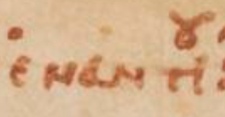 - ἐναντίου
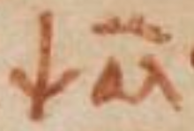 - ψαλμός
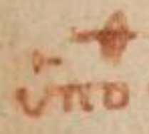 - ὑπόθεσις
 - καὶ
- καὶ
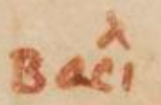 - βασιλιος
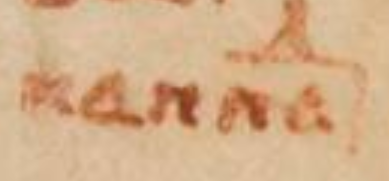 - Καππαδοκια
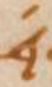 - -εί-
 - δέ
- δέ
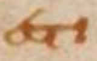 - ἐστι
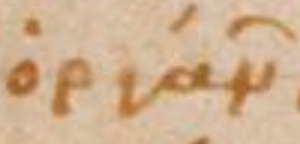 - ὀργάνων
 - ὀρθότατον
- ὀρθότατον
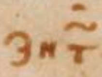 - ζητῶ
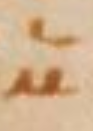 - μεν
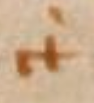 - γὰρ
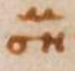 - σημνὸν
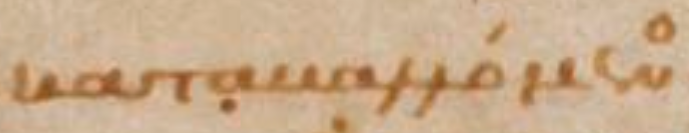 - καταβαλλόμενος
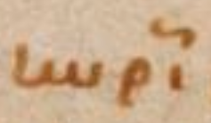 - κυρίως
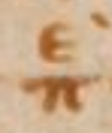 - περὶ
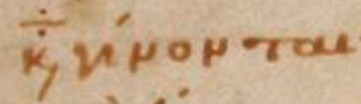 - καταγίνονται
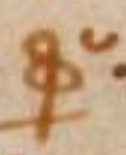 - φύσει
 - φύσιν
- φύσιν
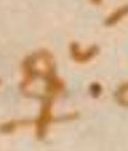 - φύσεως
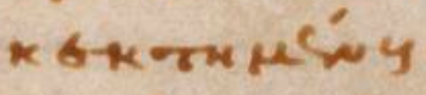 - κεκτημένους
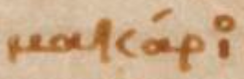 - μακάριος
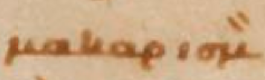 - μακαρισμὸν
 - ἐπορεύθη
- ἐπορεύθη
 - εἶπεν
- εἶπεν
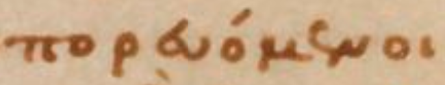 - πορευόμενοι
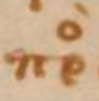 - πρὸς
 - αὐτοῦ
- αὐτοῦ
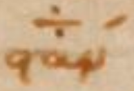 - στάντα
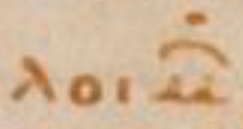 - λοιμῶν
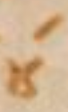 - τού
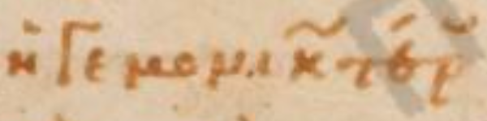 - ἡγεμονικωτέρου
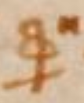 - φησὶν
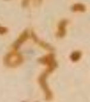 - ἑξῆς
- σου
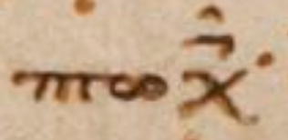 - πτωχοῖς
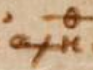 - ἀληθείᾳ
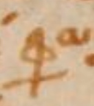 - ἔφασαν
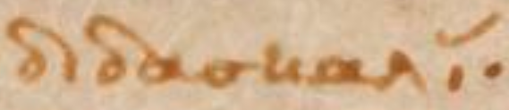 - διδασκαλίαν
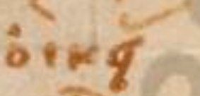 - οἰκείας
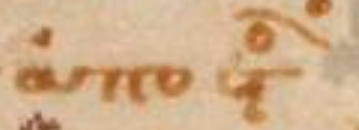 - ἀποστόλους
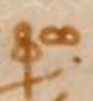 - φωνὴ
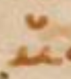 - μου
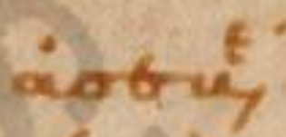 - ἀσεβέσιν
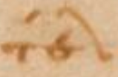 - τέλος
"Auszeichnungsmajuskeln" are ignored.
(25r)
[middle of the page] [bibletext]
[Ps (LXX) 1:1a]
(1) Μακάριος ἀνὴρ. ὃς οὐκ ἐπορεύ
(2) θη ἐν βουλῇ 〈βουλῆι〉 ἀσεβῶν·
[margin top right side]
(1) [hypopsalmos] |GREEK PUNCTUATION FOUR ANGLE SIGNS| Α´ Β´ ἀλληλούϊα·
[perioche] |GREEK PUNCTUATION FOUR ANGLE SIGNS|
προτροπὴ θεοσεβείας καὶ ἀποτροπὴ τοῦ ἐναντίου |GREEK PUNCTUATION THREE DOTS|
[margin top left side] [hypothesis]
(1)
ὑπόθεσις 〈ὑποθεσις〉 τοῦ α´ ψαλμοῦ·
[main text]
(1) Οὗτος ὁ ψαλμὸς· προτροπὴν θεοσεβείας ἔχει καὶ ἀποτροπὴν
ἀσεβείας· μακαριστέον δὲ κϋρίως· τῷ πρώτως
(2) τὸ ἀληθῶς· τοῦτο δέ ἐστι τὸ ἀγαθὸν δηλονότι τὸ θεῖον·
ὄργανον ὅπερ καὶ ναύλα καλεῖται παρ᾿ ἑβραίοις (παρεβραίοις)· παρ᾿ ἕλλησι (παρέλλησι) δὲ
(3) ψαλτήριον· ὅπερ μόνον ὀργάνων μουσικῶν ὀρθότατον εἶναι· οὐδὲν ἔχον ἐπικαμπὲς ἢ σκολιὸν·
ἵνα ἡμεῖς τὰ ἄνω ζητῶ μεν
|GREEK PUNCTUATION THREE DOTS|
[main text] [commentary]
(4)
ἀλληλούϊα·
αἰνεῖτε τὸν ὄντα ἤτοι τὸν θεὸν (θν)· τὸ γὰρ ἀλληλοῦ· αἰνεῖτε τὸν ὄντα σημνὸν· τὸ δὲ ϊα· τὸν θεόν (θν)· ὡς δὲ μέλλων
(5) πολλὰ διδάσκειν ἐπίπονα προ [... (5 character(s) left intentionally blank)] παραμυθεῖται τῷ μακαρίῳ τέλει τὰ δυσχερῆ· ταύτην ἀσφαλῆ κρηπίδα τοῦ
(6) λόγου καταβαλλόμενος· κυρίως μὲν οὖν μακαριστὸν τὸ ἀγαθὸν· καὶ ὁ θεός (θς)· οὗ πάντα ἐφίεται· ὅπερ ἀγνοοῦντες τινὲς περὶ τὰ κοσμικὰ
(7) καταγίνονται· ὧν οὐδέν ἐστιν ἀγαθὸν τῇ ἑαυτοῦ φύσει· ἅτε δὴ τρεπτὸν καὶ τοὺς αὐτὸ
κεκτημένους ἀγαθοὺς μὴ ποιοῦν· μακάριος οὖν
(8) ὁ τὰ ὄντως ὄντα ποθῶν· ἀνὴρ δὲ φήσας· οὐκ ἀπέκλεισε (οὐκαπέκλεισε) τοῦ μακαρισμοῦ τὰς γυναῖκας· ὧν γὰρ ἡ φύσις κοινὴ· καὶ τὰ
(9) ἔργα καὶ ὁ μισθὸς· διὰ δὲ τοῦ ἡγεμονικωτέρου τὴν κοινὴν ἐδήλωσε φύσιν· διδάσκει δὲ·
καὶ πῶς ἐπιγνωσόμεθα· τὸν μακαρισμὸν
(10) ἐπαγαγὼν· ὃς οὐκ ἐπορεύθη ἐν βουλῇ 〈βουλῂ〉 ἀσεβῶν· οὐκ εἶπεν πεπόρευται· ὁ μὲν γὰρ ἐν τῷ βίῳ τυγχάνων· οὔπω μακαριστὸς· διὰ
τὸ
(11) ἄδηλον τῆς ἐκβάσεως· ὁ δὲ τῷ τοιούτῳ τέλει καθορμισθεὶς ἀσφαλῶς μακαρίζεται· πῶς οὖν
μακάριοι οἱ πορευόμενοι
(12) ἐν νόμῳ κυρίου (κυ)· κατ᾿αὐτὸ (κατὰυτὸ) δηλαδὴ τὸ ἔργον· ἀλλ᾿οὐχ ὁ πρὸς ἅπαξ ἢ
(13) δεύτερον φυγῶν 〈φυγὸν〉 τὸ κακὸν ἐπαινετός· ἄλλως 〈ἀλλως〉 τοῦ αὐτοῦ· Μακαρι
(14) στέον γὰρ ἀληθῶς οὐ τὸ μετέχον ἀρετῆς [... (5 character(s) left intentionally blank)] φεύγων τὸ κακὸν· ὅν
(15) τῳ γὰρ ἂν κυρίως ἀπέχεσθαι λέγοιντο· οὐ γὰρ καθάπαξ τὸν μὴ πο
(16) ρευθέντα ἐν βουλῇ ἀσεβῶν· καὶ ἐν ὁδῷ ἁμαρτωλῶν μὴ στάντα
(17) καὶ ἐπὶ καθέθραν λοιμῶν μὴ καθίσαντα μακαρίζει· ἀλλὰ τὸν τού
(18) των ἀπεσχήμενον· τῷ 〈τῶι〉 ἔχοντι τὸ θέλημα αὐτοῦ ἐν τῷ 〈τῶι〉 νόμῳ κυρίου (κυ)·
(19) διὰ τί (διατί) οὖν μνησθεὶς ἀνδρὸς τὰς γυναῖκας παρεσιώπησεν·
(20) ὅτι μιᾶς οὔσης τῆς φύσεως· ἀρκεῖν ἡγήσατο ἐκ τοῦ ἡγεμονικωτέρου
(21) τὸ ὅλον ἐνδείξασθαι· μακαρίζει δὲ ἄνδρα· τὸν μὴ συντρέ
(22) χοντα γνώμῃ ἀσεβῶν· ὡς μὴ πορευόμενον αὐτοῖς· τὰ ἐ
(23) ναντία βουλεύεσθαι τῶν ἐκείνοις φίλων· Ὡριγένους (Ὡρ) Ἀλλὰ πῶς
(24) ἐνἀναιρέσει κακῶν ὁ μακαρισμός· κοινὸν γὰρ καὶ τῶν ἀψύχων καὶ
(25) τῶν ἀλόγων ἡ τῶν κακῶν ἀποχή· διὰ τοῦτο τοίνυν ἐπήγαγεν·
(26) ἀλλ᾿ ἢ ἐν τῷ νόμῳ κυρίου (κυ) τὸ θέλημα αὐτοῦ· τοῦτο γὰρ μόνου πέφυ
(27) κε λογικοῦ· ἀλλὰ καὶ τῆς τῶν καλῶν ἀναλήψεως κατάρχῃ τῶν
(28) κακῶν ἡ φυγή· ἔκκλινον γὰρ φησὶν ἀπὸ κακοῦ καὶ ποίησον ἀγαθόν·
(29) ὡς γὰρ ἐπὶ κλίμακος (ἐπικλίμακος) πρώτη ἀνάβασις ἡ τῆς γῆς ἀναχώρησις· οὕτως ἐπὶ τῆς κατὰ θεὸν (θν) πολιτείας ἀρχὴ προκοπῆς ὁ χωρισμὸς
(30) τοῦ κακοῦ· ἀλλὰ καὶ πᾶσα πράξεως ἀργία τῆς ἐνεργείας εὐμαρεστέρα· ὁποῖον τὸ οὐ μοιχεύσεις·
οὐ πορνεύσεις καὶ τὰ ἑξῆς·
(31) τὸ δὲ ἀγαπήσεις τὸν πλησίον σου καὶ πώλησόν σου τὰ ὑπάρχοντα· καὶ δὸς πτωχοῖς· ἐάν
τις σε ἀγγαρεύσῃ μίλιον ἓν. ὕπαγον μετ᾿αὐτοῦ 〈μεταὐτοῦ〉
(32) δύο· ψυχῆς ἤδη νεανικῆς καὶ ἀθλητῶν ἐνεργήματα· ἄλλως Ἀστερίου· Ὡς μαθητὴς δὲ τοῦ χριστοῦ (χῦ) ὁ δαυῒδ (δαδ) ἀπὸ μακαρισμοῦ
(33) ἤρξατο τῆς διδασκαλίας· ἀγγέλους δὲ οὐ μακαρίζει· – ἄγγελος γὰρ ἐν βουλαῖς ἀσεβῶν
οὐ πορεύεται· – ἀλλ᾿οὔτε βρέφος· – ἀνόη
(34) τον γὰρ· – ἀλλ᾿οὐδὲ γυναῖκας· κακείνων γὰρ ἀνὴρ ἡ κατορθοῦσα γνωρίζεται· ἐπεὶ μὴ δὲ
πᾶς ἀνὴρ εἰ κατὰ φύσιν τοιοῦτος· ὡς δὲ κα
(35) κόφων ος ἄφων ος λέγεται· oὕτως ἀσεβεῖς οἱ τὸν θεὸν (θν) μὴ σὺν ἀληθείᾳ σεβόμενοι· κυρίως δὲ μακάριος ὢν ὁ θεός (θς)· παῦλος γάρ φησι ὁ μακάριος
(36) καὶ μόνος δυνάστης· μετέδωκε ταύτης τῆς προσηγορίας ἡμῖν ὡς καὶ πιστὸς καλούμενος·
πιστὸς γάρ φησιν ὁ θεὸς (θς) δι᾿οὗ 〈διοὗ〉 ἐκκλή
(37) θητε· καὶ θεὸς (θς) πιστὸς· καὶ οὐκ ἔστιν ἀδικία ἐν αὐτῷ· ὥσπερ οὖν καὶ θεοὺς κατὰ τὸ ἐγὼ εἶπα θεοὶ ἐστέ· Θεοδωρήτου·
(38) Καὶ ἐνταῦθα ῥᾴδιον συνιδεῖν· ὡς πάλαι παρ’ ἑβραίοις τὰς ἐπιγραφὰς εὑρόντες οἱ τὰς
θείας ἑρμηνευκότες γραφὰς
(39) μετέθεσαν εἰς τὴν ἑλλάδα φωνὴν· τοῦτον γὰρ καὶ τὸν μετ’ αὐτὸν ψαλμὸν ἀνεπιγράφους
εὑρόντες. ἀνεπιγράφους κατέ
(40) λιπον· οὐ τολμήσαντες παρ’ ἑαυτῶν τι προσθεῖναι τοῖς λογίοις τοῦ πνεύματος (πνς)· τινὲς μέντοι τῶν τὰς ὑποθέσεις 〈ὑποθθ〉 τῶν ψαλμῶν συγγρα
(41) φόντων· ἠθικὴν τοῦτον ἔφασαν τὸν ψαλμὸν 〈ψαλμον〉 περιέχειν διδασκαλίαν· ἐμοὶ δὲ οὐχ ἧττον δογματικὸς ἢ ἠθικὸς ἔδοξεν εἶναι· περιέχει
(42) γὰρ οὐχ ἁμαρτωλῶν μόνον· ἀλλὰ καὶ ἀσεβῶν κατηγορίαν· καὶ παραινεῖ τοῖς θείοις λογίοις
προσέχειν διηνεκῶς· ἐξ ὧν
(43) οὐκ ἠθικὴν μόνον· ἀλλὰ καὶ δογματικὴν ὠφέλειαν καρπούμεθα· ἁρμοδίως δὲ λίαν ὁ μέγας
Δαυῒδ (Δαδ) μακαρισμὸν τῆς οἰκείας
(44) προτέθεικε συγγραφῆς τὸν ἑαυτοῦ υἱὸν ὁμοῦ καὶ δεσπότην μιμούμενος τὸν σωτῆρα (σρα) λέγω Χριστόν (Χν)· ὃς τῆς πρὸς τοὺς ἱεροὺς ἀποστόλους
(45) διδασκαλίας ἀπὸ μακαρισμῶν ἤρξατο· μακάριοι λέγων οἱ πτωχοὶ τῷ 〈τῶι〉 πνεύματι (πνι)· ὅτι αὐτῶν ἐστιν ἡ βασιλεία τῶν οὐρανῶν (οὐνῶν): υἱὸς δὲ 〈θὲ〉
(46) τοῦ Δαυῒδ (Δαδ) ὁ δεσπότης Χριστὸς (Χς)· ὡς ἄνθρωπος (ἄνος) κατὰ τὴν τῶν ἱερῶν εὐαγγελίων φωνὴν· βίβλος γὰρ γενέσεως Ἰησοῦ (Ἰῦ) Χριστοῦ (Χῦ)· υἱοῦ Δαυῒδ (Δαδ)· υἱοῦ
(47) Ἀβραὰμ· ὁ κύριος (κς) δὲ αὐτοῦ καὶ ποιητὴς· ὡς θεός (θς)· αὐτός ἐστιν ἡ φωνὴ· εἶπεν ὁ κύριος (κς) τῷ κυρίῳ (κῳ) μου κάθου ἐκ δεξιῶν μου· μακαρίζει τοίνυν·
(48) τὸν μήτε τοῖς ἀσεβέσιν ὁδοῦ κοινωνήσαντα· μήτε βεβαίαν τῶν ἁμαρτωλῶν δεξάμενον τὴν
βουλὴν· – τοῦτο γὰρ δὴ στάσιν ἐκά
(49) λεσεν· – τὸ τὴν μόνιμον τῶν λοιμῶν φυγεῖν διαφθορὰν· τὸ δὲ μακάριος ὄνομα· θεία μὲν
ὑπάρχει προσηγορία καὶ μάρτυς ὁ θεῖος
(50) ἀπόστολος βοῶν· ὁ μακάριος καὶ μόνος δυνάστης· ὁ βασιλεὺς τῶν βασιλευόντων· καὶ κύριος (κς) τῶν 〈των〉 κυριευόντων· μετέδωκε δὲ καὶ ταύτης
(51) τοῖς ἀνθρώποις (ἀνοις)· ὥσπερ καὶ τῶν ἄλλων ὁ δεσπότης [Θεός]· καὶ γὰρ πιστὸς καλούμενος· πιστὸς γάρ φησιν ὁ θεὸς (θς) δι’ οὗ ἐκλήθητε εἰς κοινωνίαν τοῦ υἱοῦ
(52) αὐτῆς· καὶ ὁ μακάριος Mωϋσῆς θεὸς (θς). φησὶ πιστὸς· καὶ οὐκ ἔστιν ἀδικία ἐν αὐτῶν· ἐκάλεσεν καὶ τῶν ἀνθρώπων (ἀνων) πιστοὺς τοὺς ἀναμφιβόλως
(53) αὐτοῦ δεχομένους τοὺς λόγους· οὕτω θεὸς (θς) καὶ ὢν καὶ καλούμενος μετέδωκε καὶ ταύτης τῆς κλήσεως· τοῖς ἀνθρώποις (ἀνοις) ὁ μεγαλόδωρος
(54) καὶ βοᾷ· ἐγὼ εἶπα θεοὶ ἐστὲ καὶ υἱοὶ ὑψίστου πάντες· ὑμεῖς δὲ ὡς ἄνθρωποι (ἄνοι) ἀποθνήσκετε· τὸ οὖν μακάριος ὄνομα τῆς κατ’ ἀ (κατἀ)
(54) ρετὴν τελειώσεως ὑπάρχει καρπὸς· ὥσπερ γὰρ [καὶ] ἕκαστον τῶν κατὰ τὸν βίον ἐπιτηδευμάτων· εἰς τὸ τέλος ὁρᾷ· ἀθλη
(55) τικὴ μὲν [οὖν] εἰς τοὺς ἐκ κοτίνου στεφάνους· στρατηγικὴ τὲ εἰς νίκας καὶ τρόπαια· καὶ μέντοι καὶ
ἰατρικὴ εἰς ὑγείαν καὶ νό
(56) σων ἀπαλλαγὴν· καὶ ἐμπορικὴ εἰς συλλογὴν κτημάτων καὶ πλούτου περιουσίαν· οὕτως καὶ
ἡ τῆς ἀρετῆς ἐπιστήμη· καρ
(57) πὸν μὲν ἔχει καὶ τέλος τὸν θεῖον μακαρισμὸν· μηδεὶς 〈μὴδεὶς〉 δὲ ἄνδρα μόνον ὁρῶν μακαριζόμενον ἐνταῦθα· ἐστερῆσθαι νομίσῃ
(58) τοῦδε τοῦ μακαρισμοῦ τῶν γυναικῶν τὸ γένος· οὐδὲ γὰρ ὁ δεσπότης Χριστὸς (Χς)· ἀρσενικοὺς τοὺς μακαρισμοὺς χρηματίςας·
(59) ἀπηγόρευσε ταῖς γυναιξὶ τὴν κτῆσιν τῆς ἀρετῆς· συμπεριλαμβάνει γὰρ τοῖς ἀνδράσι καὶ
τὰς γυναῖκας ὁ λόγος· κε
(60) φαλὴ γὰρ γυναικὸς ὁ ἀνὴρ. [ᾗ] φησὶν ὁ θεῖος ἀπόστολος συνάπτεται δὲ τῇ κεφαλῇ τὰ μέλη τοῦ σώματος· καὶ κεφαλῆς
στεφα
(61) νουμένης, ἀγάλλεται· οὕτω καὶ πρός τινα διαλεγόμενοι· καὶ φίλην αὐτῶν κεφαλὴν ὀνομάζοντες·
οὐ χωρίζομεν τῶν ἄλλων
(62) μορίων τοῦ σώματος· ἀλλ’ ἀπὸ μέρους τὸ πᾶν προσφθεγγόμεθα· οὐχ ἁπλῶς δὲ πρῶτον ὁδοῦ·
εἶτα στάσεως· εἶτα
(63) καθέδρας ἐμνημόνευσεν· ἀλλ’ εἰδὼς 〈εἰδῶς〉 ἀκριβῶς· ὡς κίνησιν μὲν πρῶτον ὁ λογισμὸς ὑπομένει· εἴτε φαῦλος εἴτε σπου
(1) Βασιλείου
(2) Καππαδοκίας
(4) ἀλληλούϊα· αἰνεῖτε τὸν ὄντα ἤτοι τὸν θεὸν (θν)· τὸ γὰρ ἀλληλοῦ· αἰνεῖτε τὸν ὄντα σημνὸν· τὸ δὲ ϊα· τὸν θεόν (θν)· ὡς δὲ μέλλων
(5) πολλὰ διδάσκειν ἐπίπονα προ [... (5 character(s) left intentionally blank)] παραμυθεῖται τῷ μακαρίῳ τέλει τὰ δυσχερῆ· ταύτην ἀσφαλῆ κρηπίδα τοῦ
(6) λόγου καταβαλλόμενος· κυρίως μὲν οὖν μακαριστὸν τὸ ἀγαθὸν· καὶ ὁ θεός (θς)· οὗ πάντα ἐφίεται· ὅπερ ἀγνοοῦντες τινὲς περὶ τὰ κοσμικὰ
(7) καταγίνονται· ὧν οὐδέν ἐστιν ἀγαθὸν τῇ ἑαυτοῦ φύσει· ἅτε δὴ τρεπτὸν καὶ τοὺς αὐτὸ κεκτημένους ἀγαθοὺς μὴ ποιοῦν· μακάριος οὖν
(8) ὁ τὰ ὄντως ὄντα ποθῶν· ἀνὴρ δὲ φήσας· οὐκ ἀπέκλεισε (οὐκαπέκλεισε) τοῦ μακαρισμοῦ τὰς γυναῖκας· ὧν γὰρ ἡ φύσις κοινὴ· καὶ τὰ
(9) ἔργα καὶ ὁ μισθὸς· διὰ δὲ τοῦ ἡγεμονικωτέρου τὴν κοινὴν ἐδήλωσε φύσιν· διδάσκει δὲ· καὶ πῶς ἐπιγνωσόμεθα· τὸν μακαρισμὸν
(10) ἐπαγαγὼν· ὃς οὐκ ἐπορεύθη ἐν βουλῇ 〈βουλῂ〉 ἀσεβῶν· οὐκ εἶπεν πεπόρευται· ὁ μὲν γὰρ ἐν τῷ βίῳ τυγχάνων· οὔπω μακαριστὸς· διὰ τὸ
(11) ἄδηλον τῆς ἐκβάσεως· ὁ δὲ τῷ τοιούτῳ τέλει καθορμισθεὶς ἀσφαλῶς μακαρίζεται· πῶς οὖν μακάριοι οἱ πορευόμενοι
(12) ἐν νόμῳ κυρίου (κυ)· κατ᾿αὐτὸ (κατὰυτὸ) δηλαδὴ τὸ ἔργον· ἀλλ᾿οὐχ ὁ πρὸς ἅπαξ ἢ
(13) δεύτερον φυγῶν 〈φυγὸν〉 τὸ κακὸν ἐπαινετός· ἄλλως 〈ἀλλως〉 τοῦ αὐτοῦ· Μακαρι
(14) στέον γὰρ ἀληθῶς οὐ τὸ μετέχον ἀρετῆς [... (5 character(s) left intentionally blank)] φεύγων τὸ κακὸν· ὅν
(15) τῳ γὰρ ἂν κυρίως ἀπέχεσθαι λέγοιντο· οὐ γὰρ καθάπαξ τὸν μὴ πο
(16) ρευθέντα ἐν βουλῇ ἀσεβῶν· καὶ ἐν ὁδῷ ἁμαρτωλῶν μὴ στάντα
(17) καὶ ἐπὶ καθέθραν λοιμῶν μὴ καθίσαντα μακαρίζει· ἀλλὰ τὸν τού
(18) των ἀπεσχήμενον· τῷ 〈τῶι〉 ἔχοντι τὸ θέλημα αὐτοῦ ἐν τῷ 〈τῶι〉 νόμῳ κυρίου (κυ)·
(19) διὰ τί (διατί) οὖν μνησθεὶς ἀνδρὸς τὰς γυναῖκας παρεσιώπησεν·
(20) ὅτι μιᾶς οὔσης τῆς φύσεως· ἀρκεῖν ἡγήσατο ἐκ τοῦ ἡγεμονικωτέρου
(21) τὸ ὅλον ἐνδείξασθαι· μακαρίζει δὲ ἄνδρα· τὸν μὴ συντρέ
(22) χοντα γνώμῃ ἀσεβῶν· ὡς μὴ πορευόμενον αὐτοῖς· τὰ ἐ
(23) ναντία βουλεύεσθαι τῶν ἐκείνοις φίλων· Ὡριγένους (Ὡρ) Ἀλλὰ πῶς
(24) ἐνἀναιρέσει κακῶν ὁ μακαρισμός· κοινὸν γὰρ καὶ τῶν ἀψύχων καὶ
(25) τῶν ἀλόγων ἡ τῶν κακῶν ἀποχή· διὰ τοῦτο τοίνυν ἐπήγαγεν·
(26) ἀλλ᾿ ἢ ἐν τῷ νόμῳ κυρίου (κυ) τὸ θέλημα αὐτοῦ· τοῦτο γὰρ μόνου πέφυ
(27) κε λογικοῦ· ἀλλὰ καὶ τῆς τῶν καλῶν ἀναλήψεως κατάρχῃ τῶν
(28) κακῶν ἡ φυγή· ἔκκλινον γὰρ φησὶν ἀπὸ κακοῦ καὶ ποίησον ἀγαθόν·
(29) ὡς γὰρ ἐπὶ κλίμακος (ἐπικλίμακος) πρώτη ἀνάβασις ἡ τῆς γῆς ἀναχώρησις· οὕτως ἐπὶ τῆς κατὰ θεὸν (θν) πολιτείας ἀρχὴ προκοπῆς ὁ χωρισμὸς
(30) τοῦ κακοῦ· ἀλλὰ καὶ πᾶσα πράξεως ἀργία τῆς ἐνεργείας εὐμαρεστέρα· ὁποῖον τὸ οὐ μοιχεύσεις· οὐ πορνεύσεις καὶ τὰ ἑξῆς·
(31) τὸ δὲ ἀγαπήσεις τὸν πλησίον σου καὶ πώλησόν σου τὰ ὑπάρχοντα· καὶ δὸς πτωχοῖς· ἐάν τις σε ἀγγαρεύσῃ μίλιον ἓν. ὕπαγον μετ᾿αὐτοῦ 〈μεταὐτοῦ〉
(32) δύο· ψυχῆς ἤδη νεανικῆς καὶ ἀθλητῶν ἐνεργήματα· ἄλλως Ἀστερίου· Ὡς μαθητὴς δὲ τοῦ χριστοῦ (χῦ) ὁ δαυῒδ (δαδ) ἀπὸ μακαρισμοῦ
(33) ἤρξατο τῆς διδασκαλίας· ἀγγέλους δὲ οὐ μακαρίζει· – ἄγγελος γὰρ ἐν βουλαῖς ἀσεβῶν οὐ πορεύεται· – ἀλλ᾿οὔτε βρέφος· – ἀνόη
(34) τον γὰρ· – ἀλλ᾿οὐδὲ γυναῖκας· κακείνων γὰρ ἀνὴρ ἡ κατορθοῦσα γνωρίζεται· ἐπεὶ μὴ δὲ πᾶς ἀνὴρ εἰ κατὰ φύσιν τοιοῦτος· ὡς δὲ κα
(35) κόφων ος ἄφων ος λέγεται· oὕτως ἀσεβεῖς οἱ τὸν θεὸν (θν) μὴ σὺν ἀληθείᾳ σεβόμενοι· κυρίως δὲ μακάριος ὢν ὁ θεός (θς)· παῦλος γάρ φησι ὁ μακάριος
(36) καὶ μόνος δυνάστης· μετέδωκε ταύτης τῆς προσηγορίας ἡμῖν ὡς καὶ πιστὸς καλούμενος· πιστὸς γάρ φησιν ὁ θεὸς (θς) δι᾿οὗ 〈διοὗ〉 ἐκκλή
(37) θητε· καὶ θεὸς (θς) πιστὸς· καὶ οὐκ ἔστιν ἀδικία ἐν αὐτῷ· ὥσπερ οὖν καὶ θεοὺς κατὰ τὸ ἐγὼ εἶπα θεοὶ ἐστέ· Θεοδωρήτου·
(38) Καὶ ἐνταῦθα ῥᾴδιον συνιδεῖν· ὡς πάλαι παρ’ ἑβραίοις τὰς ἐπιγραφὰς εὑρόντες οἱ τὰς θείας ἑρμηνευκότες γραφὰς
(39) μετέθεσαν εἰς τὴν ἑλλάδα φωνὴν· τοῦτον γὰρ καὶ τὸν μετ’ αὐτὸν ψαλμὸν ἀνεπιγράφους εὑρόντες. ἀνεπιγράφους κατέ
(40) λιπον· οὐ τολμήσαντες παρ’ ἑαυτῶν τι προσθεῖναι τοῖς λογίοις τοῦ πνεύματος (πνς)· τινὲς μέντοι τῶν τὰς ὑποθέσεις 〈ὑποθθ〉 τῶν ψαλμῶν συγγρα
(41) φόντων· ἠθικὴν τοῦτον ἔφασαν τὸν ψαλμὸν 〈ψαλμον〉 περιέχειν διδασκαλίαν· ἐμοὶ δὲ οὐχ ἧττον δογματικὸς ἢ ἠθικὸς ἔδοξεν εἶναι· περιέχει
(42) γὰρ οὐχ ἁμαρτωλῶν μόνον· ἀλλὰ καὶ ἀσεβῶν κατηγορίαν· καὶ παραινεῖ τοῖς θείοις λογίοις προσέχειν διηνεκῶς· ἐξ ὧν
(43) οὐκ ἠθικὴν μόνον· ἀλλὰ καὶ δογματικὴν ὠφέλειαν καρπούμεθα· ἁρμοδίως δὲ λίαν ὁ μέγας Δαυῒδ (Δαδ) μακαρισμὸν τῆς οἰκείας
(44) προτέθεικε συγγραφῆς τὸν ἑαυτοῦ υἱὸν ὁμοῦ καὶ δεσπότην μιμούμενος τὸν σωτῆρα (σρα) λέγω Χριστόν (Χν)· ὃς τῆς πρὸς τοὺς ἱεροὺς ἀποστόλους
(45) διδασκαλίας ἀπὸ μακαρισμῶν ἤρξατο· μακάριοι λέγων οἱ πτωχοὶ τῷ 〈τῶι〉 πνεύματι (πνι)· ὅτι αὐτῶν ἐστιν ἡ βασιλεία τῶν οὐρανῶν (οὐνῶν): υἱὸς δὲ 〈θὲ〉
(46) τοῦ Δαυῒδ (Δαδ) ὁ δεσπότης Χριστὸς (Χς)· ὡς ἄνθρωπος (ἄνος) κατὰ τὴν τῶν ἱερῶν εὐαγγελίων φωνὴν· βίβλος γὰρ γενέσεως Ἰησοῦ (Ἰῦ) Χριστοῦ (Χῦ)· υἱοῦ Δαυῒδ (Δαδ)· υἱοῦ
(47) Ἀβραὰμ· ὁ κύριος (κς) δὲ αὐτοῦ καὶ ποιητὴς· ὡς θεός (θς)· αὐτός ἐστιν ἡ φωνὴ· εἶπεν ὁ κύριος (κς) τῷ κυρίῳ (κῳ) μου κάθου ἐκ δεξιῶν μου· μακαρίζει τοίνυν·
(48) τὸν μήτε τοῖς ἀσεβέσιν ὁδοῦ κοινωνήσαντα· μήτε βεβαίαν τῶν ἁμαρτωλῶν δεξάμενον τὴν βουλὴν· – τοῦτο γὰρ δὴ στάσιν ἐκά
(49) λεσεν· – τὸ τὴν μόνιμον τῶν λοιμῶν φυγεῖν διαφθορὰν· τὸ δὲ μακάριος ὄνομα· θεία μὲν ὑπάρχει προσηγορία καὶ μάρτυς ὁ θεῖος
(50) ἀπόστολος βοῶν· ὁ μακάριος καὶ μόνος δυνάστης· ὁ βασιλεὺς τῶν βασιλευόντων· καὶ κύριος (κς) τῶν 〈των〉 κυριευόντων· μετέδωκε δὲ καὶ ταύτης
(51) τοῖς ἀνθρώποις (ἀνοις)· ὥσπερ καὶ τῶν ἄλλων ὁ δεσπότης [Θεός]· καὶ γὰρ πιστὸς καλούμενος· πιστὸς γάρ φησιν ὁ θεὸς (θς) δι’ οὗ ἐκλήθητε εἰς κοινωνίαν τοῦ υἱοῦ
(52) αὐτῆς· καὶ ὁ μακάριος Mωϋσῆς θεὸς (θς). φησὶ πιστὸς· καὶ οὐκ ἔστιν ἀδικία ἐν αὐτῶν· ἐκάλεσεν καὶ τῶν ἀνθρώπων (ἀνων) πιστοὺς τοὺς ἀναμφιβόλως
(53) αὐτοῦ δεχομένους τοὺς λόγους· οὕτω θεὸς (θς) καὶ ὢν καὶ καλούμενος μετέδωκε καὶ ταύτης τῆς κλήσεως· τοῖς ἀνθρώποις (ἀνοις) ὁ μεγαλόδωρος
(54) καὶ βοᾷ· ἐγὼ εἶπα θεοὶ ἐστὲ καὶ υἱοὶ ὑψίστου πάντες· ὑμεῖς δὲ ὡς ἄνθρωποι (ἄνοι) ἀποθνήσκετε· τὸ οὖν μακάριος ὄνομα τῆς κατ’ ἀ (κατἀ)
(54) ρετὴν τελειώσεως ὑπάρχει καρπὸς· ὥσπερ γὰρ [καὶ] ἕκαστον τῶν κατὰ τὸν βίον ἐπιτηδευμάτων· εἰς τὸ τέλος ὁρᾷ· ἀθλη
(55) τικὴ μὲν [οὖν] εἰς τοὺς ἐκ κοτίνου στεφάνους· στρατηγικὴ τὲ εἰς νίκας καὶ τρόπαια· καὶ μέντοι καὶ ἰατρικὴ εἰς ὑγείαν καὶ νό
(56) σων ἀπαλλαγὴν· καὶ ἐμπορικὴ εἰς συλλογὴν κτημάτων καὶ πλούτου περιουσίαν· οὕτως καὶ ἡ τῆς ἀρετῆς ἐπιστήμη· καρ
(57) πὸν μὲν ἔχει καὶ τέλος τὸν θεῖον μακαρισμὸν· μηδεὶς 〈μὴδεὶς〉 δὲ ἄνδρα μόνον ὁρῶν μακαριζόμενον ἐνταῦθα· ἐστερῆσθαι νομίσῃ
(58) τοῦδε τοῦ μακαρισμοῦ τῶν γυναικῶν τὸ γένος· οὐδὲ γὰρ ὁ δεσπότης Χριστὸς (Χς)· ἀρσενικοὺς τοὺς μακαρισμοὺς χρηματίςας·
(59) ἀπηγόρευσε ταῖς γυναιξὶ τὴν κτῆσιν τῆς ἀρετῆς· συμπεριλαμβάνει γὰρ τοῖς ἀνδράσι καὶ τὰς γυναῖκας ὁ λόγος· κε
(60) φαλὴ γὰρ γυναικὸς ὁ ἀνὴρ. [ᾗ] φησὶν ὁ θεῖος ἀπόστολος συνάπτεται δὲ τῇ κεφαλῇ τὰ μέλη τοῦ σώματος· καὶ κεφαλῆς στεφα
(61) νουμένης, ἀγάλλεται· οὕτω καὶ πρός τινα διαλεγόμενοι· καὶ φίλην αὐτῶν κεφαλὴν ὀνομάζοντες· οὐ χωρίζομεν τῶν ἄλλων
(62) μορίων τοῦ σώματος· ἀλλ’ ἀπὸ μέρους τὸ πᾶν προσφθεγγόμεθα· οὐχ ἁπλῶς δὲ πρῶτον ὁδοῦ· εἶτα στάσεως· εἶτα
(63) καθέδρας ἐμνημόνευσεν· ἀλλ’ εἰδὼς 〈εἰδῶς〉 ἀκριβῶς· ὡς κίνησιν μὲν πρῶτον ὁ λογισμὸς ὑπομένει· εἴτε φαῦλος εἴτε σπου